Details
What information helps Chain respond with a useful answer instead of a generic reply.
Contact / 01
Contact opens as a clear logistics decision hub: what Chain offers, who it helps, why it matters, and which route to take first.
The first screen combines positioning, proof, primary action, and fast internal navigation, so people can act immediately or compare the rest of the contact route with context.
Shipment dashboard hero
Select the closest route and Chain keeps the next step, proof, and follow-up expectation aligned with visibility and delivery control.
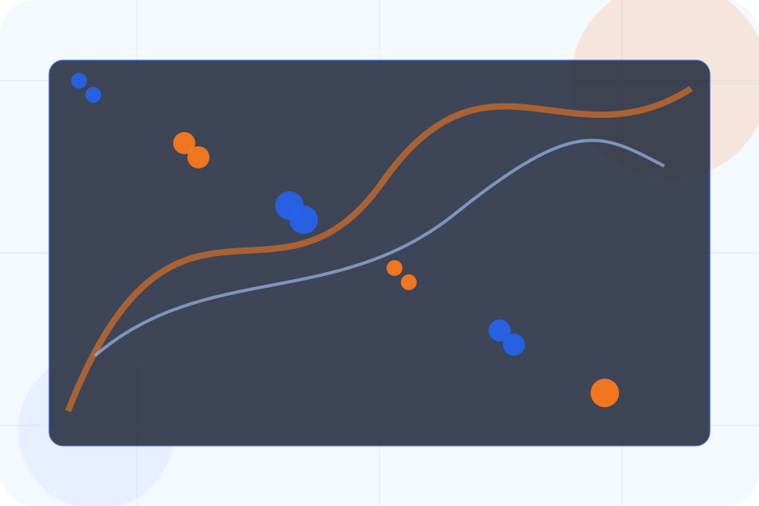
Contact / 02
Quote converts customer proof into a useful buying signal: the problem, the experience, and what changed afterward.
Proof stays believable by focusing on situation, service experience, and practical change rather than vague praise or unsupported results.
Request QuoteChain structures quote around situation, experience, and a clear next route so visitors can compare the block quickly before they request a quote.
Request QuoteContact / 03
Volume makes the contact path concrete: what to send, how the response works, and what Chain needs before visitors request a quote.
The section reduces contact friction by naming the channel, expected detail, privacy path, and response expectation instead of dropping visitors into a generic form.
Request Quote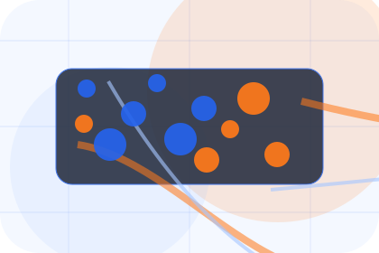
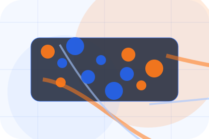
What information helps Chain respond with a useful answer instead of a generic reply.
Contact / 04
Locations makes the contact path concrete: what to send, how the response works, and what Chain needs before visitors request a quote.
The section reduces contact friction by naming the channel, expected detail, privacy path, and response expectation instead of dropping visitors into a generic form.
Request QuoteWhat information helps Chain respond with a useful answer instead of a generic reply.
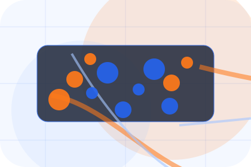
How the visitor should think about response, urgency, location, or availability.
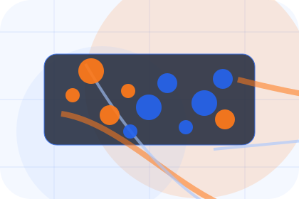
The expected next message keeps scope, timing, and the first practical step clear.
Contact / 05
Timeline explains the operating sequence so visitors can see how the first request becomes a clear recommendation and follow-up.
The steps are written from the visitor side: what they do first, what Chain clarifies, what they receive, and how support continues.
Request QuoteHow visitors begin this route and what detail is useful at the first step.
What Chain reviews, filters, or explains before recommending the next move.
What the visitor receives afterward, including support, proof, or a handoff to the next page.
Contact / 06
Sales makes the contact path concrete: what to send, how the response works, and what Chain needs before visitors request a quote.
The section reduces contact friction by naming the channel, expected detail, privacy path, and response expectation instead of dropping visitors into a generic form.
Request QuoteWhat information helps Chain respond with a useful answer instead of a generic reply.
How the visitor should think about response, urgency, location, or availability.
The expected next message keeps scope, timing, and the first practical step clear.
Contact / 07
Support explains the practical scope, best-fit situations, and expected outcome so logistics visitors can compare options without decoding jargon.
The section keeps the offer concrete: what is included, who it is best for, what decision it supports, and which linked route gives the deeper detail.
Open ContactWho should use support and when it belongs in the contact journey.
The practical benefit visitors should expect after choosing this route.
Where to compare details, pricing, support, or contact options before committing.
Contact / 08
Response makes the contact path concrete: what to send, how the response works, and what Chain needs before visitors request a quote.
The section reduces contact friction by naming the channel, expected detail, privacy path, and response expectation instead of dropping visitors into a generic form.
Request Quote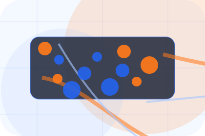
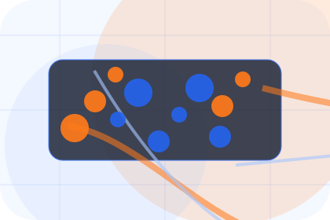
What information helps Chain respond with a useful answer instead of a generic reply.
Contact / 09
Submit makes the contact path concrete: what to send, how the response works, and what Chain needs before visitors request a quote.
The section reduces contact friction by naming the channel, expected detail, privacy path, and response expectation instead of dropping visitors into a generic form.
Request QuoteWhat information helps Chain respond with a useful answer instead of a generic reply.
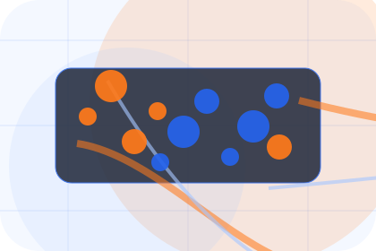
How the visitor should think about response, urgency, location, or availability.
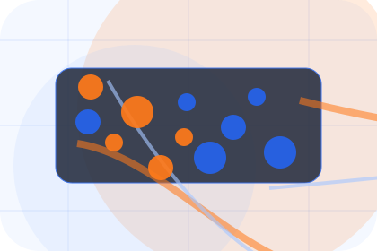
The expected next message keeps scope, timing, and the first practical step clear.
Contact / 10
Chain closes the contact route with a clear action, a quick reminder of the value, and a low-friction way to request a quote.
Visitors who are ready can use the primary action. Visitors who are still comparing can scan the section links, proof, and support routes before they request a quote.
Request QuoteThe final block keeps the choice simple: act now, compare one more proof route, or send enough detail for a focused response.
Request Quote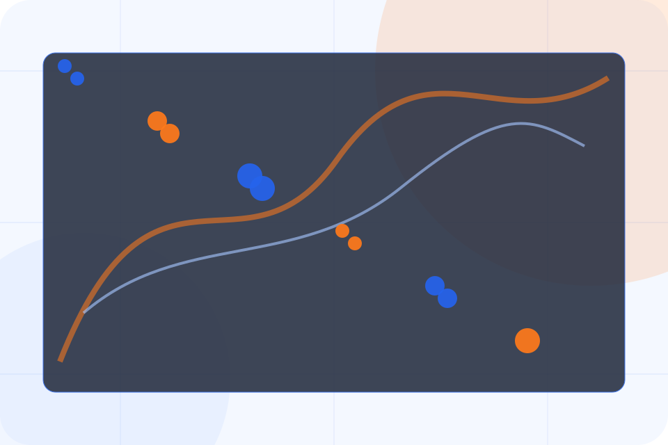
visibility and delivery control
A freight-command site with shipment dashboards, network maps, quote modules, and status proof. Contact ends with a direct path to request a quote, plus enough context for visitors who still need to compare.
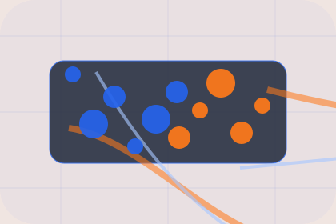
Request QuoteInformation is provided for planning and should be reviewed for the final client, location, and operating rules.